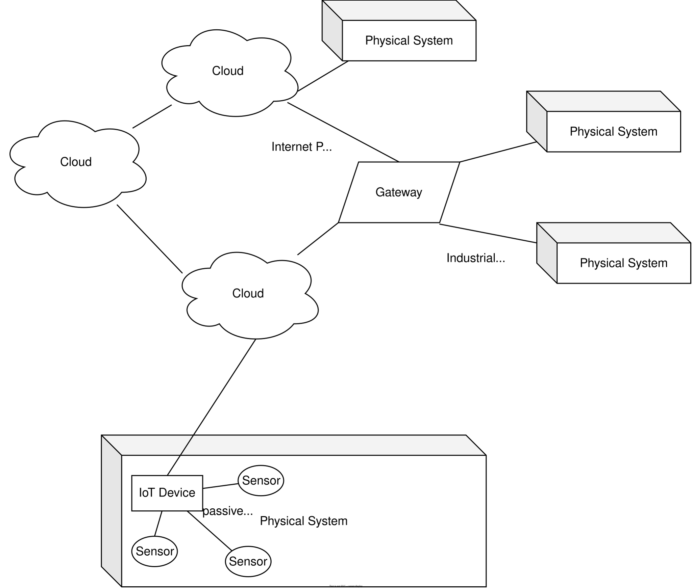
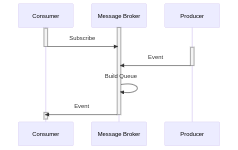
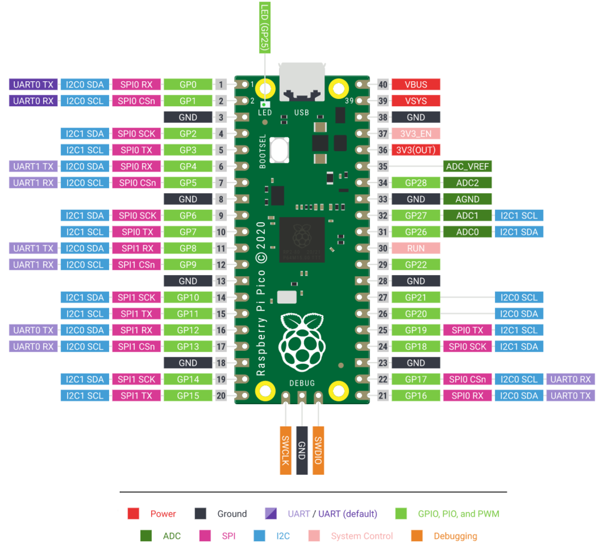

Synchron
Grundbegriffe

Kommunikations-Architekturen (MQTT)

Telemetrie

Vorstellung der Aufgabenstellung
Jede Gruppe entwickelt mit einem eigenen Microcontroller und Sensor. Ziel des ersten Teils ist eine Firmware, die die Messwerte des DHT11 so an den Kurs-Broker sendet, wie es conventions.md und asyncapi.yaml vorgeben.
Erste Schritte mit dem Pico W
Die Vorlage code.py, der TOML-Parser in lib/ und alle Hinweise auf dieser Seite beziehen sich auf CircuitPython. MicroPython ist ein naher Verwandter, aber die Vorlage und die Adafruit-Bibliotheken laufen dort nicht. Für den ESP32 gibt es eine eigene Vorlage in src/esp32_firmware (Arduino/PlatformIO). Wenn Sie MicroPython verwenden möchten, sprechen Sie das vorher mit der Lehrveranstaltungsleitung ab.
CircuitPython installieren. Laden Sie die aktuelle
.uf2-Datei für den Raspberry Pi Pico W herunter. Halten Sie die TasteBOOTSELam Pico gedrückt, während Sie das USB-Kabel einstecken. Es erscheint ein LaufwerkRPI-RP2, auf das Sie die.uf2-Datei kopieren. Der Pico startet neu und meldet sich als LaufwerkCIRCUITPY.Bibliotheken kopieren. Laden Sie das Adafruit CircuitPython Bundle herunter, dessen Versionsnummer zu Ihrer CircuitPython-Version passt (z.B. Bundle 10.x für CircuitPython 10). Legen Sie auf
CIRCUITPYeinen Ordnerlib/an und kopieren Sie aus dem Bundle hinein:Datei / Ordner aus dem Bundle Wofür adafruit_dht.mpyDHT11 auslesen adafruit_minimqtt/(ganzer Ordner)MQTT-Client adafruit_connection_manager.mpy,adafruit_ticks.mpywerden von MiniMQTT benötigt adafruit_ntp.mpyUhrzeit aus dem Internet holen (siehe Hinweise unten) Dazu kommt
toml.pyaussrc/raspi_firmware/lib/dieses Repositories.code.pyundsettings.tomlliegen im Hauptverzeichnis vonCIRCUITPY.code.pystartet automatisch, sobald Sie eine Datei auf dem Laufwerk speichern. Ein eigener Upload-Schritt ist nicht nötig.Serielle Konsole öffnen. Alle
print()-Ausgaben und alle Fehlermeldungen Ihres Programms erscheinen nur dort. Ohne Konsole arbeiten Sie blind. Geeignet sind z.B. der Mu Editor, die Erweiterung Serial Monitor in VS Code, PuTTY (Windows) oderscreen/minicom(Linux, macOS), jeweils mit 115200 Baud. Details: Connecting to the Serial Console. In der Konsole beendetCtrl+Cdas Programm undCtrl+Dstartet es neu.
Meilensteine
Jeder Meilenstein liefert ein sichtbares Ergebnis. Gehen Sie erst zum nächsten, wenn der aktuelle stabil läuft, dann wissen Sie bei Problemen immer, welcher Teil schuld ist.
| # | Meilenstein | Woran Sie den Erfolg erkennen |
|---|---|---|
| 1 | LED blinken lassen (board.LED, digitalio) |
Die Onboard-LED blinkt. Sie wissen, wie Sie Code auf den Pico bringen und die Konsole lesen. |
| 2 | Sensor auslesen (adafruit_dht), alle 2 Sekunden print() |
Temperatur und Luftfeuchtigkeit erscheinen in der Konsole. Einzelne Fehlversuche werden abgefangen und das Programm läuft weiter. |
| 3 | Mit dem WLAN verbinden (wifi, socketpool) |
Die IP-Adresse des Pico erscheint in der Konsole. |
| 4 | Eine einzelne MQTT-Nachricht senden (adafruit_minimqtt) |
Die Nachricht ist im MQTT Explorer unter Ihrem Topic sichtbar. |
| 5 | Spezifikation erfüllen | Payload ist JSON mit timestamp, value und unit wie in asyncapi.yaml. Auf dem Status-Topic steht ok, nach dem Abstecken des Pico wechselt es nach kurzer Zeit von selbst auf offline. |
| 6 | Refactoring | Struktur wie in der Vorlage, Konfiguration in settings.toml, Sendeintervall aus der Konfiguration. |
Hinweise zu den schwierigen Stellen
Hier keine Lösungen, sondern die Stichworte, die Ihnen die Suche verkürzen:
- Zeitstempel. Die Spezifikation verlangt einen Zeitstempel in UTC nach ISO 8601. Der Pico hat keine batteriegepufferte Uhr; nach dem Einschalten steht sie auf dem Jahr 2000. Stichworte:
adafruit_ntpholt die Zeit aus dem Internet, das Modulrtcsetzt die Uhr des Pico. - Datum formatieren. Das
time-Modul von CircuitPython hat keinstrftime.time.localtime()liefert aber ein Tupel aus Jahr, Monat, Tag, Stunde, Minute und Sekunde, aus dem sich der String mit einer Formatierung zusammenbauen lässt. - Client-ID. Der Broker erlaubt jede Client-ID nur einmal. Melden sich zwei Geräte mit derselben ID an, werfen sie sich gegenseitig hinaus, und beide sehen ständig Verbindungsabbrüche. Die Vorlage der
settings.tomlhat dafür keinen eigenen Schlüssel. Überlegen Sie, woraus Sie eine ID ableiten, die über alle Gruppen hinweg eindeutig ist. - Last Will. Das
offlineauf dem Status-Topic sendet nicht Ihr Programm, sondern der Broker, wenn die Verbindung abbricht. Es wird beim Verbindungsaufbau hinterlegt. Stichwort:will_set()in MiniMQTT, retained. - Sensorfehler. Der DHT11 liefert regelmäßig einen
RuntimeError(Checksum, Timing). Das ist kein Fehler in Ihrem Aufbau, sondern normal. Fangen Sie ihn ab und versuchen Sie es beim nächsten Intervall erneut.
- WLAN wird nicht gefunden. Der Pico W kann nur 2,4-GHz-Netze. Viele Router senden 5 GHz unter demselben Namen; das erkennt der Pico nicht. Handy-Hotspots funktionieren meist, wenn sie auf 2,4 GHz eingestellt sind.
ImportError: no module named 'socket'oderselect: Diese Module gibt es in CircuitPython nicht. Für Netzwerkzugriffe istsocketpoolzuständig, siehe Termin 2.AttributeError: 'module' object has no attribute 'strftime': siehe Hinweis Datum formatieren.ImportError: no module named 'adafruit_...': Datei fehlt inlib/oder das Bundle passt nicht zur CircuitPython-Version.- Temperatur zu hoch. Sitzt der Sensor direkt neben dem Pico, misst er dessen Abwärme mit. Siehe Materialien.
- Alles hängt nach mehreren Neustarts. Häufige Neustarts per Speichern oder
Ctrl+Dkönnen das WLAN-Modul aufhängen. USB-Kabel kurz abstecken, dann läuft es wieder. - Verbindung bricht ständig ab. Meist eine doppelte Client-ID, siehe oben.
Asynchrone Inhalte
Mit folgenden Inhalten sollten Sie sich vertraut machen, um die Aufgabenstellung erfolgreich zu bearbeiten:
CircuitPython auf dem Pico W (die Vorlage baut darauf auf):
- Welcome to CircuitPython: Installation,
CIRCUITPY-Laufwerk, serielle Konsole - Pico W WiFi with CircuitPython: WLAN-Verbindung,
settings.toml, erste Netzwerkzugriffe - MQTT in CircuitPython: Einführung in MiniMQTT, dazu die API-Dokumentation
- DHT CircuitPython Code: Auslesen des DHT11 mit
adafruit_dht - Wokwi: Online-Simulator für Mikrocontroller. Nützlich, um Schaltungen zu testen; simuliert allerdings MicroPython, nicht CircuitPython.
MQTT und Schnittstellen-Beschreibung:
- AWS Whitepaper on MQTT: Topic-Design und Best Practices
- AsyncAPI: Die Spezifikation, in der
asyncapi.yamlgeschrieben ist. Im AsyncAPI Studio lässt sich die Datei lesbar darstellen. - MQTT Explorer: Freier MQTT-Client zur Visualisierung von Nachrichten. Abonnieren Sie
iiot/group/#, um auch die Nachrichten der anderen Gruppen zu sehen.
Zum Hintergrund (nicht für die Vorlage nötig):
- MicroPython und die MicroPython-Einführung: der nahe Verwandte von CircuitPython, verbreitet auf dem ESP32
- PlatformIO: Build-System für die ESP32-Vorlage in
src/esp32_firmware